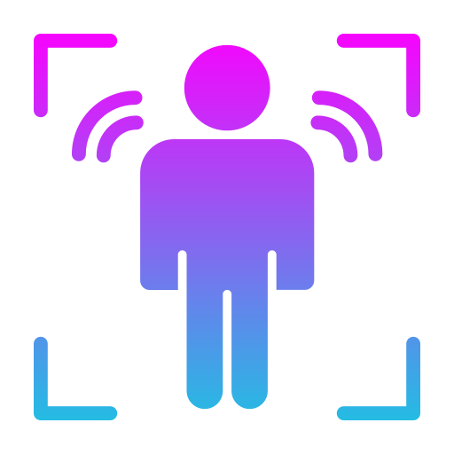

Your Gateway to Real-time Data Insights
A system that keeps track of all your sensors
Unlock the power of real-time sensor data with Sensor Logger. This cutting-edge platform provides you with instant access to a world of data, no matter where you are. Imagine a system that seamlessly tracks and monitors all your sensors, delivering valuable insights right at your fingertips.
With Sensor Logger, you can keep your finger on the pulse of your sensor network, ensuring that you're always in control. From environmental sensors to security devices, our platform empowers you to harness data for informed decision-making. Say goodbye to the guesswork and hello to a smarter, more connected future.
Sensor Logger also empowers you to effortlessly access raw data in a neatly organized list format and instantly visualize it in dynamic charts. Stay in control as you monitor and track your data, while also having the ability to export and download it for your convenience

Join us on this exciting journey of data-driven discovery. Sensor Logger - where data meets intelligence, and possibilities are endless
Features
Sensor-data: You'll find an array of sensor choices at your fingertips. This is where the journey begins,and it's all about empowerment through information. You can effortlessly select the sensors you wish to explore by just clicking the 'sensor selection' button. It is as easy as choosing channels on a remote control.
Data visualization: But that's just the start. What truly sets this setup apart is the capability to transform raw data into insightful, ready-to-use formats. It's like having a personal data scientist at your service. With just a click on the 'view data analysis', you can access your sensor data in both raw and analyzed formats, allowing you to keep track of the information that matters most. In a world where data is king, your website is the crown jewel, offering you the keys to real-time sensor insights.
RFID: Access control is a critical concern for many organizations, especially when dealing with sensitive data. While access control cards are issued to specific individuals, it's equally important to have a robust system in place to track who has clocked in at a given time. That's where our system comes into play. We also recognize the significance of the digital information stored on these cards. With our RFID technology, your data is securely locked away, ensuring that RFID-protected data remains absolutely impenetrable. The advanced technology we employ guarantees that only authorized individuals can access, manage, and analyze your crucial information. RFID: Bridging the gap between data security and user-friendly access.